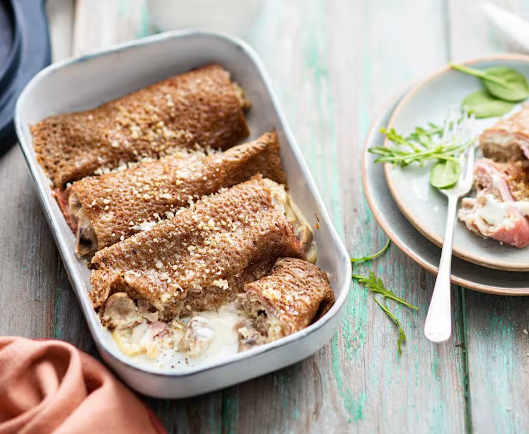

Galette fourrée jambon-champignons
Ingrédients
- 150 g de gruyère
- 50 g d'oignon
- 50 g de beurre
- 150 g de champignons de Paris
- 40 g de farine
- 500 g de lait
- 1 c. à c. de sel
- 2 pincées de poivre
- 2 pincées de muscade
- 8 galettes de sarrasin
- 8 tranches de jambon blanc

Préparation
Étape 1
Mettre 150 g de gruyère dans le bol et râper 10 sec/vitesse 10. Réserver et rincer le bol.
Étape 2
Mettre 50 g d'oignon et hacher 5 sec/vitesse 5. Ajouter un peu de 50 g de beurre (10g) et 150 g de champignons de Paris en quatre, rissoler 8 min/120ºC/sens inverse/vitesse 1 sans le gobelet. Réserver.
Étape 3
Mettre le reste du beurre, 40 g de farine, 500 g de lait, 1 c. à c. de sel, 2 pincées de poivre et 2 pincées de muscade, cuire 7 min/90ºC/vitesse 4.
Étape 4
Ajouter le gruyère et mélanger 20 sec/vitesse 5. Mélanger avec les champignons et laisser refroidir.
Étape 5
Préchauffer le four à 180ºC. Réchauffer une à une 8 galettes de sarrasin à la poêle avec un peu de beurre.
Étape 6
Garnir chaque galette d’1 tranche de 8 tranches de jambon blanc et de 2 cas de garniture, la rouler et la poser dans un plat à gratin. Cuire 15min.
Conseils
- Galettes maison : inutile de les réchauffer à la poêle.